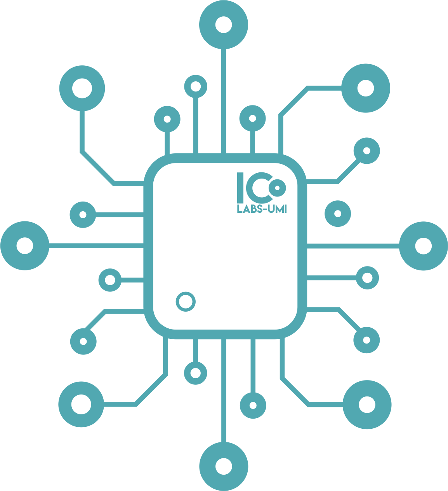

System Maintenance
ICLABS is currently undergoing scheduled maintenance.
We'll be back shortly.
System Maintenance in Progress
Back to Home

ICLABS is currently undergoing scheduled maintenance.
We'll be back shortly.